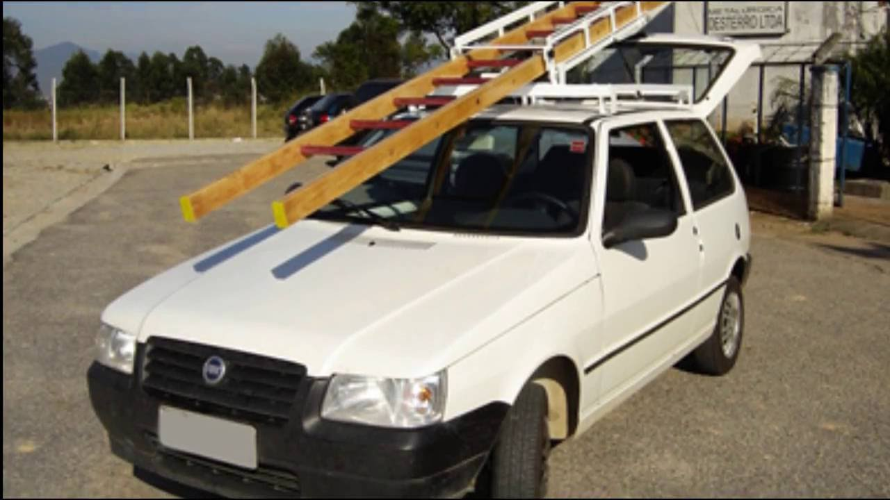

O Uno é um automóvel compacto fabricado pela Fiat, lançado na Europa em 1983. Foi lançado no Brasil no ano seguinte, e sua nova geração (projetada no Brasil) só foi lançada em 2010, direcionada aos países da América Latina. A versão antiga foi produzida até dezembro de 2013 sendo vendida como Fiat Mille nome adotado inicialmente em 1990, quando adotou um motor com menos de 1 000cc no Brasil. O nome é uma referência ao número um em italiano.
